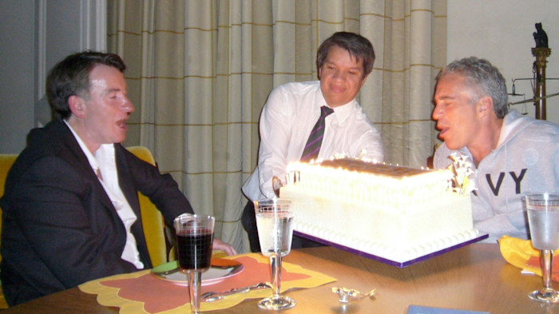
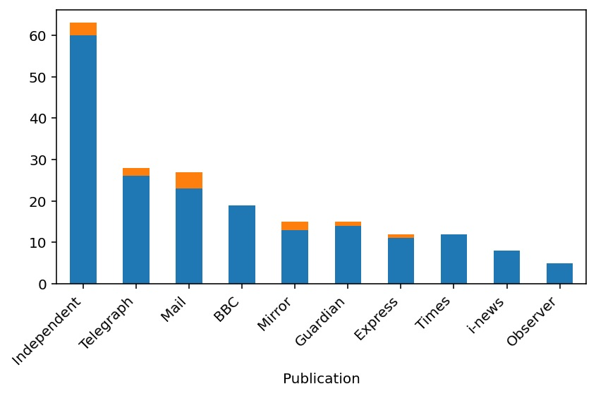

Following the latest Epstein disclosures the political fate of the Prince of Darkness dominated headlines and news bulletins for days. It forced the resignation of ‘Starmer’s brain’, Morgan McSweeney, a protégé of Mandelson who masterminded the right-wing takeover of the Labour Party using undeclared funding from wealthy donors.
The Prime Minister himself was nearly toppled but is soldiering on without his brain for now. He says he simply will not abandon the country he loves. Lucky us.
Meanwhile, the UK’s media class seem to have been enjoying themselves. It’s exciting stuff political crisis. But as they (quite rightly) line up to question Sir Keir’s judgment in appointing the close friend of a notorious paedophile as ambassador to the United States, you can’t help but wonder why they didn’t raise this issue more prominently before. It was after all public knowledge and social media was full of ordinary people not only raising it, but also noting the conspiracy of silence from the BBC and the rest of the news media over Mandelson’s relationship with Epstein.
In a classic enactment of the spiderman pointing meme, this was actually raised by the Cabinet Minister Pat McFadden in defence of Starmer during a long interview with the BBC’s Laura Kuenssberg.
McFadden: A regular appearer on a Times podcast. Part of the BBC’s election coverage. This is about if you put these questions to Peter Manderson when you interviewed him before this or not. Maybe you did; quite a lot of people didn’t.
Kuenssberg: This is about the prime minister of this country’s judgment to hire him to one of the most high-profile jobs in the country. And of course, the benefit of hindsight can be 20-20. But the prime minister’s curiosity seems to have fallen way, way short here.
McFadden: Well, I believe the prime minister will have asked about this relationship. It sounds to me, and I can’t know until everything’s published, Peter Manderson will have enormously diminished it, portrayed himself as some kind of victim, of being duped, rather than what’s been revealed in the in the exchanges that we’ve seen. And you know, even when you look at the BBC’s coverage of the day that Peter Manderson was appointed as the prime minister, there is no mention on it of Jeffrey Epstein.
So is that true? Well, for the most part, yes. The appointment of Peter Mandelson as ambassador to Washington DC was announced on 20 December 2024. I used the news database Nexis UK to identify articles published in the UK national press, as well as transcripts of BBC1 news programmes, to identify mentions of Peter Mandelson between the announcement and 19 January 2025.
This identified a total of 19 BBC reports and 185 newspaper articles (print and online, but excluding letters). Of these 204 reports, only 13 (that’s 6.4%) mentioned Epstein. Below is a breakdown of these news items by publication (combining print and online and weeklies with Sundays). The articles mentioning Epstein are in orange and the rest in blue.

So that’s nothing from The Times/Sunday Times, i-news or the Observer, and nothing on BBC TV (at least that was transcribed and logged by Nexis UK).
But even this slither of articles risks overstating the extent of the coverage. Firstly, two of these are duplicated articles appearing in both the Daily Mail and on MailOnline, which Nexis records as separate articles. Secondly, the majority of those articles mentioned Epstein only in passing.
In the table below I give details of these articles, including the number of mentions of Epstein in each. What’s immediately obvious is that there were only four articles that covered Mandelson’s relationship with Epstein in any detail in the month that followed his appointment. And three of these four were written by Christopher Bucktin, US editor at Reach plc UK titles (which includes the Mirror and the Express). Credit where it’s due. Well done Chris.
Notable that a good share of the mentions came from committed reactionaries, who probably believe Mandelson to be a socialist of some sort. By the way, the only mention from everyone’s favourite left-wing publication, the Guardian, was a short post on its Politics Live stream reporting Momentum’s statement objecting to the appointment.
So why the conspiracy of silence? Because Mandelson was one of them. Not a journalist, but a key player in the insular and incestuous world of UK media and politics where careers are built through personal connections and destroyed if anyone steps out of line. Together these people form an elite network of political journalists, politicians and political strategists who collectively decide what is and isn’t a political story. Everyone knows this, but for obvious reasons no one with any influence in that world ever says it.
| Byline | Headline | Publication | Date | Word Count | Mentions of Epstein |
|---|---|---|---|---|---|
| Christopher Bucktin | Jeffrey Epstein abuse victims’ fury as paedophile’s pal Peter Mandelson appointed ambassador | mirror.co.uk | 20/12/2024 | 1153 | 25 |
| Archie Mitchell | Who is Peter Mandelson? From New Labour fixer to party grandee | Independent | 20/12/2024 | 603 | 1 |
| Nadeem Badshah, Andrew Sparrow | Peter Mandelson confirmed as new ambassador to US | The Guardian (Politics Live) | 20/12/2024 | 7115 | 1 |
| Simon Heffer | How ‘Teflon’ Peter Mandelson keeps bouncing back | telegraph.co.uk | 20/12/2024 | 1393 | 1 |
| Christopher Bucktin | An insult to Epstein survivors’ Starmer rapped over Mandy US role | Daily Mirror | 21/12/2024 | 346 | 12 |
| Christopher Bucktin | Mandelson’s US job ‘an insult to every survivor who fought to expose Epstein’s web of power’ | The Express | 21/12/2024 | 1064 | 25 |
| David Lynch | Lord Mandelson: ‘Dark lord’ of New Labour strikes back as UK ambassador to US | Independent | 20/12/2024 | 439 | 1 |
| Richard Littlejohn | I was off until the New Year, but then Starmer announced his most shameful move yet. | MailOnline | 26/12/2024 | 1455 | 1 |
| David Maddox | Trump team set to ‘lock out’ UK after Mandelson picked to be ambassador to the US | Independent | 21/12/2024 | 979 | 1 |
| Natasha Leake | MPs question Lord Mandelson’s suitability as US ambassador over Epstein links | telegraph.co.uk | 20/12/2024 | 840 | 19 |
| Richard Littlejohn | Making ‘I’m Mandy, buy me’ Our Man in the US is Starmer’s most shameful decision yet | The Daily Mail | 27/12/2024 | 1448 | 1 |
| Andrew Pierce | Peter is positively purring with pleasure at the thought of the silver service, the butlers… being our ambassador is the lifestyle he’s always wanted. | The Daily Mail | 18/01/2025 | 1870 | 3 |
| Andrew Pierce | Peter is positively purring with pleasure’. The inside secrets of the pampered lifestyle that awaits Lord Mandelson as our man in Washington, from liveried butlers to chauffeurs - and why it’s set tongues wagging in the White House. | MailOnline | 18/01/2025 | 1870 | 3 |